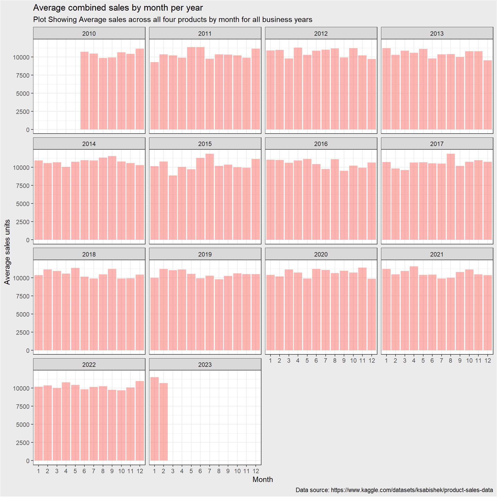
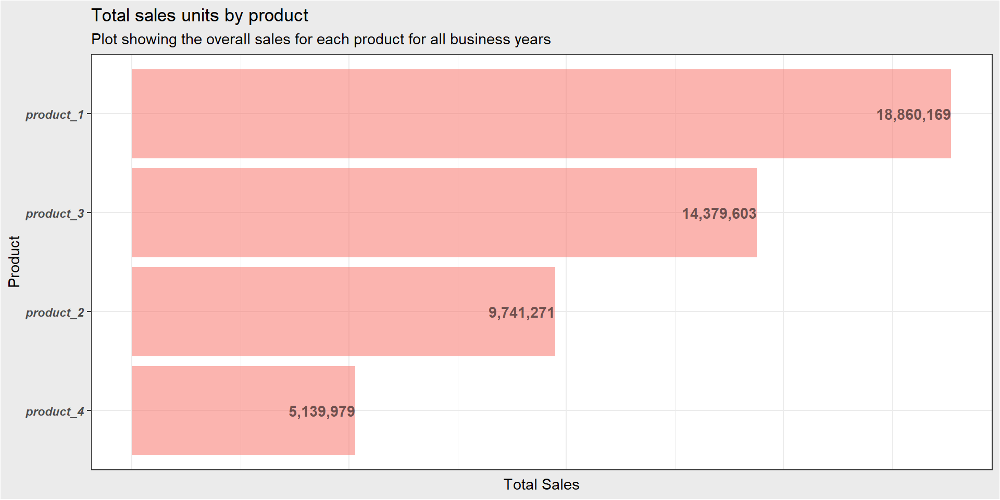

1 Introduction:
REC Corp LTD. is a small-scale business venture located in India that has been selling four different sales for over ten years. The company has collected sales data from their retail centers, which has been organized into a small csv file. The CEO of REC Corp LTD. has tasked me with analyzing this data to answer several important questions about their business.
1.1 Project Description:
The aim of this project is to analyze the sales data of REC Corp LTD. and provide valuable insights into their business. My analysis will help the company make informed decisions about their sales and improve their overall performance. I will use statistical and machine learning techniques to provide answers to the following questions:
Is there any trend in the sales of all four sales during certain months?
Out of all four sales, which product has seen the highest sales in all the given years?
What would be the estimate on the number of units of each product sold on the 31st of December every year if all the retail centers were kept open?
Would dropping the production of any one of the sales result in a massive setback for the company?
Can we predict the sales and revenues for the year 2024 with the best possible accuracy?
By answering these questions, I will provide valuable insights into the sales patterns and overall performance of REC Corp LTD. My analysis will also help the company make informed decisions that can improve their business outcomes.
The dataset used for this project can be found here
1.2 Dataset Structure and Preparation
Before conducting any analysis on the sales data provided by REC Corp LTD., it is important to perform data cleaning to ensure the data is accurate and reliable. This involves reading the data into the R global environment, checking for duplicates, missing values, and formatting the columns to the correct data types.
In the code chunk below, I will first read the data from the CSV file into R. I will then check for duplicates and missing values to ensure that my analysis is based on reliable data. Additionally, I will format the columns to their correct data types, such as dates and numeric values, to make them consistent with the expected data types for the analysis.
This data cleaning process is crucial as it ensures that our analysis is based on accurate and reliable data. By cleaning the data, I can avoid errors and inconsistencies in my analysis, which could lead to incorrect conclusions and decisions.
# read data from disk and call it sales
# also clean variable names into consistent names
sales <- read_csv("data/statsfinal.csv", show_col_types = F) %>% clean_names()New names:
• `` -> `...1`# print first 6 rows
DT::datatable(head(sales))# check duplicates
anyDuplicated(sales)[1] 0# Apply a data transformation step that is preparing the dataset for further analysis by renaming the variables to more intuitive names and converting the date column to a date data type.
sales <- sales %>%
# rename variables to intuitive names
rename(
id = x1,
quantity_p1 = q_p1,
quantity_p2 = q_p2,
quantity_p3 = q_p3,
quantity_p4 = q_p4,
revenue_p1 = s_p1,
revenue_p2 = s_p2,
revenue_p3 = s_p3,
revenue_p4 = s_p4
) %>%
# format date column to date data type
mutate(date = as.Date(date, format = "%d-%m-%Y"))
DT::datatable(head(sales))# check missing values
any_na(sales)[1] TRUEAfter checking for missing values in the sales data, I found some missing values in the date column. Upon closer inspection, I discovered discovered that the missing values were associated with invalid dates. Such dates include September 31st, November 31st, etc. Since these are not valid dates, the observations associated with them should be considered as errors and should be excluded from the analysis. These observations could be the result of data entry errors or data quality issues. Fortunately, the percentage of these missing values is only 0.06%.
# remove observations with missing values
sales <- sales %>% filter(!is.na(date))
# confirm removal
any_na(sales)[1] FALSE2 Is there any trend in the sales of all four sales during certain months?
To answer this question, I will analyze the combined sales figures for the four sales over the given time period. By analyzing the combined data, I can identify any consistent trends or patterns in the sales figures that apply to all four sales.
sales %>%
mutate(
# create a variable(combined_sales) that sums the total sales unit for every observation
combined_sales = quantity_p1 + quantity_p2 + quantity_p3 + quantity_p4,
# derive the month variable from the date column
month = lubridate::month(date, label = F),
# derive the year variable from date column
year = lubridate::year(date)
) %>%
# group the observations by the year and month variable
group_by(year, month) %>%
# calculate the mean combined sales for every year and month
summarise(avg_combined_sales = mean(combined_sales), .groups = "drop") %>%
# create a bar plot of average combined sales by month
ggplot(aes(as.factor(month), avg_combined_sales, fill = "red", alpha = .5))+
# removed the unnecessary legend made by geom_col
geom_col(show.legend = F)+
# facet by year and let each plot have its own x axis
facet_wrap(~year)+
theme_bw()+
labs(
title = "Average combined sales by month per year",
subtitle = "Plot Showing Average sales across all four products by month for all business years",
caption = "Data source: https://www.kaggle.com/datasets/ksabishek/product-sales-data",
y = "Average sales units",
x = "Month"
)+
theme(
plot.background = element_rect(fill = "gray92")
)
2.1 Insights generated
After conducting an analysis of the sales data for REC Corp LTD.’s four products, I have found that there is no discernible pattern or trend in the sales for certain months, as shown in the plot above. This suggests that the sales of these products are not significantly impacted by seasonality or other factors that would cause sales to increase or decrease in specific months.
While it may be disappointing not to find any clear trend or pattern, this insight is still valuable to REC Corp LTD. as it highlights that their sales performance is relatively stable and not overly reliant on particular seasons or other external factors. This insight can inform the company’s business strategy and help them to plan for the future more effectively.
Since there is no clear trend or pattern in the sales, the company can focus on other factors that may impact sales performance, such as product quality, pricing, marketing, and customer experience. This insight can help REC Corp LTD. to continue to grow and improve their business by focusing on these other factors that may impact their sales.
3 Out of all four sales, which product has seen the highest sales in all the given years?
The second question that we are trying to answer is which of the four products has seen the highest sales in all the given years. By identifying the product that generates the highest revenue, REC Corp LTD. can better understand their customer’s preferences and tailor their product strategy accordingly. In addition, knowing which product performs the best can help the company allocate their resources more effectively and make informed business decisions that drive growth and profitability. In this section, I will analyze the sales data and determine which of the four products has seen the highest sales over the given years.
total_sales <- sales %>%
# calculate the sum of sales of all products over the whole span
summarise(
product_1 = sum(quantity_p1),
product_2 = sum(quantity_p2),
product_3 = sum(quantity_p3),
product_4 = sum(quantity_p4)
) %>%
pivot_longer(
everything(), names_to = "product", values_to = "total_sales"
)
# print total sales
DT::datatable(total_sales)# create a bar plot to visualize the result
total_sales %>% # use the total_sales data frame
ggplot(
aes(x = fct_reorder(product, total_sales), # reorder products by total sales
y = total_sales, fill = "red", alpha = .5 # set fill color and transparency
)
)+
geom_col(show.legend = F)+ # plot a column chart, turn off legend
geom_text( # add text labels to each column
aes(
label = format(total_sales, big.mark = ","), # format sales numbers with commas
fontface = "bold", # set text to bold
hjust = 1 # align text to the right of the column
)
)+
coord_flip()+ # flip x and y axes
theme_bw()+ # set plot theme to black and white
labs(
title = "Total sales units by product", # add title and subtitle
subtitle = "Plot showing the overall sales for each product for all business years",
y = "Total Sales", # label y axis
x = "Product" # label x axis
)+
theme( # adjust plot theme settings
plot.background = element_rect(fill = "gray92"), # set plot background color
axis.text.x = element_blank(), # hide x axis tick labels
axis.ticks.x = element_blank(), # hide x axis ticks
legend.position = "none", # hide legend,
axis.text = element_text(face = "bold.italic") # set axis text to bold & italic
)
3.1 Insights Generated
Based on my analysis of the sales data for REC Corp LTD.’s four products, I have found that product 1 has seen the highest sales in all the given years, with 18,860,169 units sold. This is followed by product 3 with 14,379,603 units sold, then product 2 with 9,741,271 units sold, and finally product 4 with 5,139,979 units sold.
This insight provides valuable information for REC Corp LTD. as it highlights that products 1 and 3 are performing better than others by a big margin. By focusing on these top-performing products, the company can invest more resources in these products and potentially generate even more sales and revenue. Additionally, this information can help the company to identify areas where they need to improve the performance of their lower-performing products (product 2 and product 4) or potentially even consider discontinuing these products if they do not align with the company’s goals.
Overall, the insight gained from this analysis can help REC Corp LTD. to make informed decisions about their product strategy and resource allocation, which can drive growth and profitability for the company.
4 What would be the estimate on the number of units of each product sold on the 31st of December every year if all the retail centers were kept open?
To estimate the sales for December 31st, I will calculate the average sales for all the Decembers where data is available and use that average as an estimate for the closed day. This approach assumes that the sales pattern for the closed day is similar to the sales pattern for the rest of the month. However, this approach has some limitations, as it doesn’t take into account any special events or changes in customer behavior that may affect the sales on the closed day.
# make the table output interactive
DT::datatable(sales %>%
mutate(
# Create a new variable 'month' using the date column
month = lubridate::month(date, label = T)
) %>%
# Filter to only keep observations where the month is December
filter(month == "Dec") %>%
# Group the data by year
group_by(year = lubridate::year(date)) %>%
# calculate the average quantity sold for each product
summarise(
product1_estimate = round(mean(quantity_p1),1),
product2_estimate = round(mean(quantity_p2),1),
product3_estimate = round(mean(quantity_p3),1),
product4_estimate = round(mean(quantity_p4),1)
)
)4.1 Point to Note
Based on the analysis of the available data, the table above shows the estimated number of units that could have been sold on December 31st for each of the four products. It is important to note that due to the retail centers being closed on that day, these estimates are purely theoretical and should be taken with caution. Nonetheless, this information could be useful in forecasting sales and optimizing inventory levels in preparation for the holiday season.
Further research could be done to identify patterns in sales leading up to December 31st to better inform the above estimates.